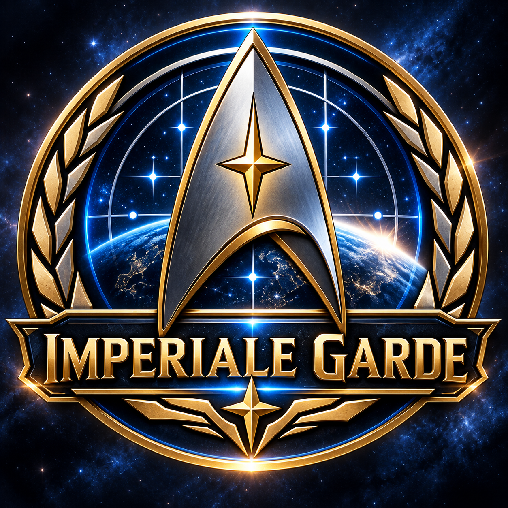
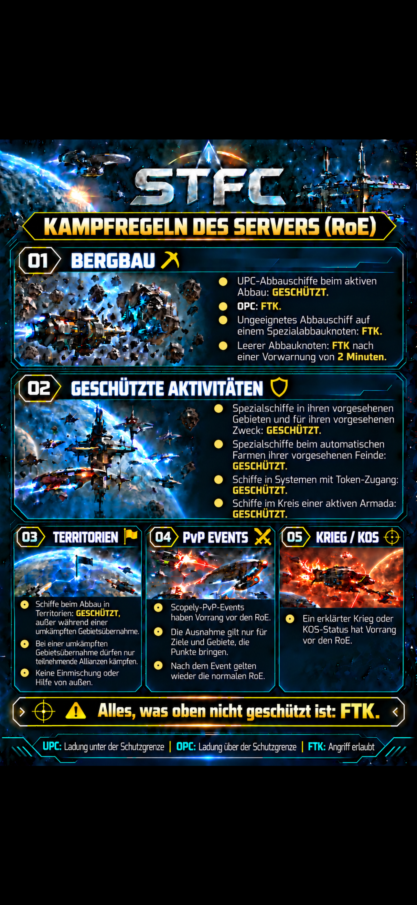

Verbündet
Mit diesen Allianzen sind wir verbündet. Im Kriegsfall stehen wir ihnen bei, wenn sie um Hilfe bitten.
Schiffe und Bases dieser Allianzen werden nicht angegriffen. Das gilt ausdrücklich auch für Frachter, die OPC sind.

Allianz-Handbuch
Dieses Handbuch sammelt die wichtigsten Regeln, Vorgaben und Tipps unserer Allianz an einem Ort.

In unseren eigenen Gebieten gilt die Regel: maximal 2 Schiffe pro Spieler auf den Minen. Wenn jemand eine Mine benötigt und alle besetzt sind, sollte ein Spieler, der zwei Minen belegt, eine davon freimachen. Eine Anfrage im Allianz-Chat ist dabei erforderlich.
Des Weiteren ist das Parken auf einer Mine in unseren Gebieten untersagt.
Die Diplomatiestatus zeigen, wie wir gegenüber anderen Allianzen auftreten und welche Angriffe erlaubt sind.
Mit diesen Allianzen sind wir verbündet. Im Kriegsfall stehen wir ihnen bei, wenn sie um Hilfe bitten.
Schiffe und Bases dieser Allianzen werden nicht angegriffen. Das gilt ausdrücklich auch für Frachter, die OPC sind.
Befreundete Allianzen. Grundsätzlich erfolgen keine Angriffe auf ihre Schiffe oder Frachter, auch nicht auf Frachter, die OPC sind.
Bases bleiben unangetastet.
Es besteht ein Nichtangriffspakt.
Frachter, die OPC sind, werden nicht angegriffen. Bases werden ebenfalls nicht angegriffen.
Diese Allianzen sind in der Vergangenheit gelegentlich durch regelwidriges Verhalten aufgefallen.
Der Abschuss von Frachtern, die OPC sind, ist erlaubt. Ungeschützte Bases dürfen angegriffen werden.
Diese Allianzen sind wiederholt durch regelwidriges Verhalten aufgefallen.
Auch hier dürfen OPC-Frachter sowie ungeschützte Bases angegriffen werden.
Der Abschuss aller Schiffe und Frachter ist ausdrücklich gestattet und erwünscht!
Nur eine begrenzte Anzahl von Spielern kann an einer Armada teilnehmen (2–7 Spieler). Je höher die Stufe des Armada-Kontrollzentrums, desto mehr Plätze stehen zur Verfügung.
Wenn du eine Armada starten möchtest, kündige sie im Allianz-Chat an.
Wenn du einer Armada beitreten möchtest, schreibe ein „+“ in den Allianz-Chat, um dich anzumelden.
Der Armada-Anführer vergibt einen ⭐ an die angemeldeten Spieler, sobald diese angekommen sind.
Ohne ⭐ werden schwächere Schiffe automatisch von stärkeren Schiffen aus der Armada verdrängt.
Kleine Armadas = kleine Schiffe. Die kombinierte Stärke aller Schiffe in der Armada sollte ungefähr 2/3 der Gesamtstärke der Armada betragen.
Oft gibt es mehr interessierte Spieler als freie Plätze. Daher gilt grundsätzlich:
Wer zuerst ein „+“ geschrieben hat, erhält den ⭐ und damit einen Platz in der Armada.
Ausnahme: Die Stärke der angemeldeten Schiffe reicht nicht aus, um die Armada zu besiegen. In diesem Fall kann der Armada-Anführer auch anderen Spielern einen ⭐ geben.
Bitte nehmt Rücksicht aufeinander.
Für Eclipse-Armadas gilt bei Selten/Episch in den Exchange-Systemen:
Die Anmeldung erfolgt wie bei normalen Armadas durch:
„+“ + Kürzel des Starters
⚠️ Wichtig: Pro Spieler darf nur ein Schiff für eine Armada angemeldet werden, damit bei mehreren gleichzeitig laufenden Armadas kein Chaos entsteht.
Ausnahme: Eine zweite Stella darf angemeldet werden, wenn dadurch verhindert werden soll, dass eine andere Eclipse-Armada mangels Teilnehmern platzt.
Verstöße gegen diese Regeln werden zunächst mit einer Gelben Karte geahndet.
Beim zweiten Verstoß folgt die Rote Karte und der Ausschluss von Armadas.
Wird trotz Ausschluss weiterhin an Armadas teilgenommen, folgt der Ausschluss aus der Allianz.
Hier können später bewährte Armadaformationen dargestellt werden.
Crew-Empfehlungen für Farming, PvE, PvP und besondere Situationen.
Hier geht es zu unserem Allianz-Discord:
Dieser Bereich kann später um einzelne Spezialschiffe, Einsatzgebiete und Tipps erweitert werden.